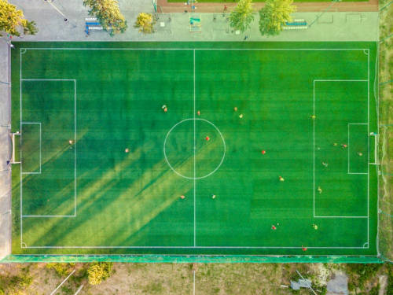
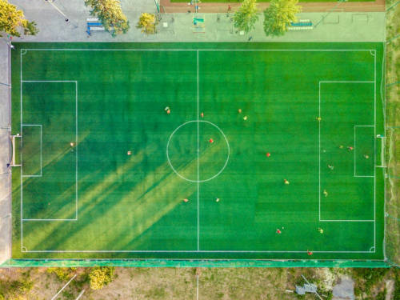

Ontem aprendemos como colocar imagens no nosso site, agora vamos colocar em prática mais uma vez. Usei o GIMP para fazer algumas modificações nas imagens para o site não ficar tão pesado. E lembrando também que tem que pesquisar as imagens com cuidado para seu site, para não ter direito de imagens.
Eu procurei por essas fotos nos seguintes sites: Google Imagens e Pexels. Agora irei tentar colocar as duas imagens no meu site, vamos lá:

Como aprendi tentei as três maneiras de tentar colocar imagenc no site que foram: em uma pasta, outra em uma sub-pasta e a última copiando o endereço da imagem.